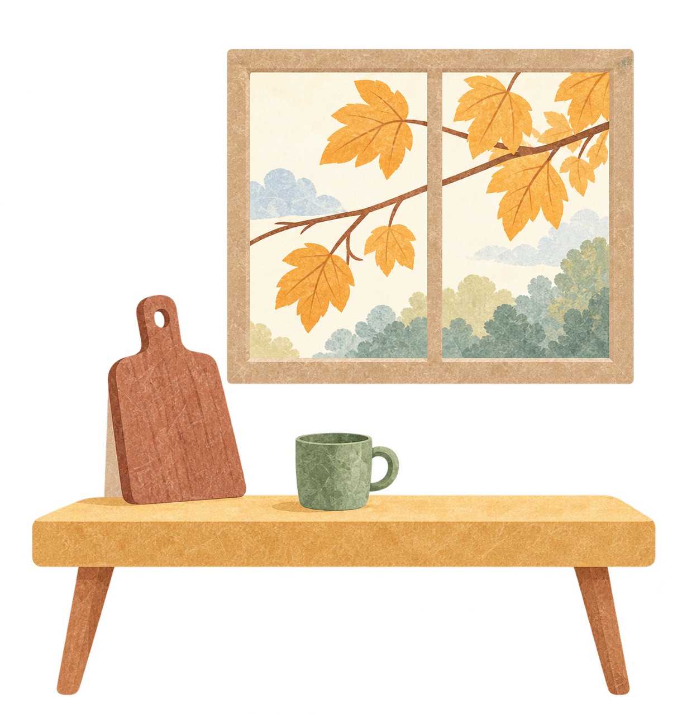

选好手边的食材，翻开今天的食谱。

只使用你选中的厨具和调料。
本次只发送以下做饭信息。未识别的自填内容不会发送。
配置 / 删除我的 DeepSeek 密钥 ↗
本站不会附带聊天记录、个人记忆、账号资料或浏览历史。以上数据会发送给 DeepSeek，并消耗所配置 API 的额度；其后续处理遵循该服务的政策。AI 做法需要核对配料与熟度。
长按下方文字选择复制；电脑可按 Ctrl / Cmd + C。
默认使用内置食谱，食材选择和内置推荐在浏览器里完成。只有单独选择 DeepSeek、预览并确认后，才会发送本次做饭数据并产生模型调用。支持跨页选材，每道菜不必用完全部食材。
图片是菜品示意，实际配料请看文字清单。用量是参考值，请按现有存量调整。请确认食材新鲜，并彻底煮熟。
完整食材与菜谱清单 ↗